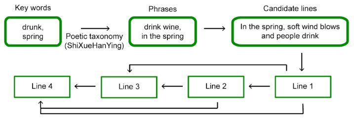

How we did it by AI:
Artificial poem generation
We replicated the poem generation procedures in Zhang and Lapata (2014) and constructed a poem generation model based on recurrent neural networks.
The model primarily selected poetic contents (words and lines) constraint by the learned surface realization (e.g. phonological rules).
Trained on a corpus of classical Chinese poems containing 78,859 quatrains from Tang Poems, Song Poems, Song Ci, Ming Poems, Qing Poems, and Tai Poems, the model learns representations of individual characters and their combinations into one or more lines, as well as how these lines mutually reinforce and constrain each other.
We first used the model to generate 4000 artificial poems. The illustration of the poem generation is shown below:

Rating the artificial poems by computation
We further acquired an objective index of complexity of these artificial poems - language complexity - by measuring the perplexity of the language model used to generate the second to fourth sentences of each poem. The perplexity is an intrinsic metric to evaluate the quality of language models. It is the inverse probability of the test sentence (W), normalized by the number of words (N):
Lower perplexity indicates a better language model. In math:
$$P(W) = P(w_1, w_2, \cdots, w_N)^ {-\frac{1}{N}}$$
Based on the chain rule, we derived the below:
$$P(W) = [\prod_{i=1}^{N} \frac{1}{P(w_i | w_1, w_2, \cdots, w_{i-1})}]^{-\frac{1}{N}}$$
We used the recurrent neural network to compute the conditional probability below:
$$P(w_i | w_1, w_2, \cdots, w_{i-1})$$.